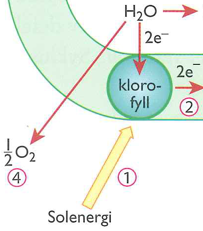

Figure 1.1: Image of the system located in the window
In this chapter...
The collection of data material used in this thesis took part in the late autumn, 2013, at a high school located in the center of Oslo. The school is in the upper third on the grade scale, with a limit of 43.5 points for admission in 2010/2011 (Utdanningsetaten, 2010). Therefore the students at this school are mostly high achievers.
Contact with the school was first initiated through Intermedia, and a presentational flier was sent as an explanation of the project (insert an appendix ref here). Luckily our request coincided perfectly with a two-week time frame for reviewing photosynthesis in one of the teacher’s biology classes. He was therefore quite eager to swap out the experiment described in the textbook with an experiment using our application.
The class selected for the experiment was a biology class at the highest level offered at the school, biology 2, which has an extensive curriculum covering e.g photosynthesis, enzymes and energy transmitters (insert ref to photosynthesis chapter). The students were between 17 and 18 years of age, and for the main part most of the 20 students taking the class were present. All the students agreed to participate in the study, but due to technical limitations and a busy time schedule, most of the data collection was only done with a small sample of the group.
The planning of the project was done by us in conjunction with the teacher responsible for the for the biology class. An initial planning meeting was held at the school around one week prior to the experiments. There we gave the teacher a thorough introduction of the system, and presented some ideas for expirements the students could conduct using our system as platform. This involved:
The teacher then suggested that we could conduct two experiments, so the students could work on the relations between the different external factors effect on photosynthesis. As the system records a range of different variables, it would be possible to keep the environment relatively controlled, or at least point to factors which could be sources of error in the experiment.
We agreed that the factor where we could get the most interesting result was to vary the light intensity and the light quality (wavelength). The first experiment would then involve keeping the plant located in a window facing west, receiving sunlight and light from the fluorescent indoor-lighting. In the second experiment we would plant new seeds, and relocate the plant to a (presumably) light proof cupboard. The plant would then only be given green light with a known wavelength. Each of the experiments would have a duration of approximately one week.
The project was presented and the first experiment initiated by one of the students on Friday 25th of October. This went on until Friday 1st of November when the second experiment was initiated. The second experiment went on until Wednesday 13th of November when the primary data collection session took place. During the experiments we were present at four separate occasions, observing what the teacher was focusing on, and which parts of the photosynthesis the students found most difficult. In addition we were answering questions about the system, and observed how the system was used by the teacher and how the students related to it.
The first experiment was conducted with a setup in the window as shown in figure 1.1. The system was located in the front of the classroom near a door leading to the next classroom, this meant it was visible and in reach of everyone walking by. The system was in the windowsill and there was a radiator located on the wall just beneath the plant. The plant was exposed to sunlight or daylight depending on the weather, but it was also exposed to the fluorescent indoor-lighting in the ceiling. Due to the time of year, and lack of people using the classroom in the evening, this meant that the plant would get light in the period between 08:00 and about 17:00. It turned out that the system was draining power from a power outlet that was either connected to the light, or timer based, since the system went down and did not post data between 19:00 and 07:00. We did also have some technical issues with the system the weekend from 25th of October to 27th of October, meaning that we missed data from the first seeds germinating.
The second experiment was conducted with a setup in a cupboard as shown in figure 1.2. The cupboard was located in the front of the classroom, however more stuck in the corner behind the teachers desk. However, this picture is taken with flash and light from the room coming in to the cupboard.
Different methods for data collection was discussed and reviewed early on in the project. As our primary data source we chose video data with the use of multiple cameras and a screen-dump. This was collected only during one session lasting 45 minutes, resulting in 3x45 minutes of video data and 1x45 minutes of audio data. Supplementary data from this session includes the written answers from the groups which were not filmed, and our personal notes of general observations. In addition to this we were present at five occasions preceding the session, taking notes. In the following sections the methods used will be discussed.
It was determined early in the project that video and audio recording were to be used. Perhaps the primary reason for this was the tradition at Intermedia, as video data collection has been used and thoroughly tested by a number of researchers here. This meant that we would get a lot of help from co-located researchers in what microphones to use, placement of cameras, operation of the equipment, etc.
A total of 45 minutes of video and audio was recorded, using three separate video sources, and three microphones. One camera was placed in front of the group, able to capture facial expressions
The main advantage with using video is the ability to replay a sequence as many times as necessary. This gives us the ability to give thick descriptions of what happened without being compromised by the human memory capacity.
Our most influential source, regarding both paradigm, methodology and method were the tradition for using qualitative data in information systems research at department of informatics.
The analytical procedure employed within this thesis is Interaction analysis (Jordan and Henderson, 1995), an interdisciplinary method which emerged from fields such as ethnography, sociolinguistics, ethnomethodology, conversation analysis, and sociocultural theories.
An interdisciplinary method for the empirical investigation of the interaction of human beings with each other and with objects in their environment. It investigates human activities such as talk, nonverbal interaction, and the use of artifacts and technologies, identifying routine practices and problems and the resources for their solution (Jordan and Henderson, 1995, p39)
For Interaction analysis to become a reality video and audio recording technology has been a vital resource. The combination of recording talk as well as nonverbal interaction and the ability to replay a sequence as many times as necessary gives us the possibility to analyze more thoroughly. Combining this micro-level data of interaction with ethnographic data gives us a means of analyzing how the interaction is part of the situated context and institutional practices. (Furberg, 2009).
Even though we have done a case study in a real educational setting, considering these ethnographic data is important if we are to keep a dialogic perspective.
How we
Derry et al. speaks about two different approaches to select parts of a video corpus for further examination. These two are the inductive approach and the deductive approach, where we clearly fit into the inductive apporach.
To make sense of the data gathered we approached it in several different ways with different focuses. Below is a chronological list of the ways we approached the data.
In this chapter we will present the findings from our case study with a focus on themes relevant to our research questions. Each of the themes contain at least one extract with a context description, raw data from the transcript, and an explanation of the events that are unfolding.
The first theme (2.1) is named Hypothesis generation and testing. Here we will follow a hypothesis from generation to falsification to a new hypothesis. Then we move on to Guided inquiry (2.2) where we will show examples of how misconceptions can either be addressed by the teacher or not, and how it can lead to hypothesis generation based on false premises. The third theme (2.3) is dubbed language and presents three extracts regarding scientific and everyday language. The last theme (2.4), linking between representations, aims to show how the students relate the digital representation to the physical plant.
For the sake of simplicity the first experiment where the plant was located in the window has been named plant A, and the second experiment where the plant was located in the cupboard, plant B.
| Who | Interactions | Percentage |
| Linda | 14 | 3.67% |
| Nora | 118 | 30,97% |
| Siri | 182 | 47.77% |
| Fredrik | 67 | 17.59% |
| Everybody | 381 | 100% |
We enter the situation at the beginning of class. The students have been divided into groups, and we are approximately two minutes into filming. Preceding this discussion, the students have tried for about one minute to figure out what the task is, and what the two experiments involved. Siri has read out loud the first question given to them: ”what did you expect would happen?” (in the experiment), and they have repeated some of the theories presented in previous lectures (e.g soil moisture going down over time). Prior to the excerpt, the students have appeared a bit insecure about the task. But as we enter the setting they seem more focused and interested, and the discussion has changed from making general observations to generating hypotheses.
| Time | Who | Speech | Action |
| 2:04 | Nora | hehe.. mm.. hmhm .. når den stod i skapet så.. jeg visste ... |
|
| 2:13 | Siri | ... neddi skapet ... |
|
| 2:13 | Nora | eller jeg visste ikke helt hva den skull.. hva som skulle skje da egentlig .. |
|
| 2:16 | Siri | .. det var det planten stod i skapet også skulle det være bare grønt lys på den ... men det kan jo hende for eksempel at det kom litt annet lys inn i skapet også .. så da er det ikke sikkert at det bare var grønt lys .. | peker på skapet |
| 2:31 | Nora |
| nikker |
| 2:31 | Siri | og planten tar jo opp littegrann grønt lys også, men ikke så mye .. så derfor kunne det hende atte den ikke vokste like my.. eller jeg trodde at den ikke ville vokse like mye i skapet .. siden da fikk den bare grønt lys ... |
|
| 2:46 | Nora | ... mmm ... | nikker |
At first, Nora is not sure what would happen to the plant given green light in the cupboard (plant B). Siri, as one who thinks out loud, promptly starts reflecting on what could have happened. First she proposes that the plant was not only given green light, indicating that there could be error sources to the experiment. This is acknowledged by a slight nod by Nora. Then she goes on to reflect on the wavelengths plants absorb, and given that they only absorb a small amount of green light, the plant in the cupboard would not grow as much as plant A. Nora agrees to this hypothesis by nodding and saying ”mmm”.
The basis for the statement that plants only absorb a small amount of green light can be found in the textbook: ”reflected and transmitted light can hit our eyes and give the object color” (Sletbakk et al., 2008, pg. 103). The book also contains a graph over the different pigments and which wavelengths of light they absorb, clearly showing little absorption of green light. In addition, the teacher has used this as a discussion point, asking why plants’ leaves appear green.
We enter the setting immediately after the excerpt explained in chapter 2.1.1. Siri has generated a hypothesis which she wants to test out. The mood in the group has now gone from laughter and insecurity about the task to concentration. The overall noise level in the class room has also fallen significantly.
| Time | Who | Speech | Action |
| 2:47 | Siri | ...eller nesten bare grønt lys ihvertfall ... men hvor mye vokste den egentlig? er det den ((refererer til planten på bordet)) som stod i skapet? | peker på planten som står på pulten |
| 2:52 | Sjur | ja |
|
| 2:53 | Nora | OJ(!) |
|
| 2:53 | Siri | Den har jo vokst ganske mye | smiler |
| 2:59 | Siri | men var stilkene på den som stod i vinduet var de også hvite? | Peker mot vinduet |
After Siri has proposed the hypothesis that plant B would not grow as much as plant A, she wants to find out if it holds true. Suddenly she notices the plant which is placed on the table in front of them and exclaims, ”is it that one(!)?”. When Sjur confirms, the whole group and especially Siri look surprised. It seems like they all firmly believed the hypothesis Siri presented (see chapter 2.1.1) to hold true. And therefore, their knowledge of photosynthesis would also point to the plant not growing as much as it had. Thus, the first hypothesis generated by the group has been falsified.
As a reaction to this Siri stops to think for a few seconds before she points at the window and asks: ”were the stems on the one in the window also white?”. This is a very valid scientific question, as a plant with absolutely no photosynthesis would most likely be white. A result of having no pigments. The reason for her asking this may be related to a comment made by another student in a previous lecture. He had observed that when they put plants in the basement for winter storage, the leaves would turn white.
This next excerpt is from a situation occurring only a few seconds after the first hypothesis has been falsified. The group has been instructed to interact with the system on the computer in front of them to find the answer to the question asked at 2:59 ”were the stems on the one in the window also white?”. When we enter the situation they have a video of plant A on the screen, dated 31st of October, ready to play.
| Time | Who | Speech | Action |
| 3:21 | Nora | Ja for karse har jo hvit stilk |
|
| 3:23 | Siri | Ja det de har hvit stilk de også |
|
| 3:24 | Fredrik | mhm ... mmja så da er det jo egentlig ganske ... ja ikke så stor forskjell da på de som stod ... i skapet ((peker på planten på border)) og de som stod i vinduskarmen hvis man bare ser på ... utseende | Dette sies mens Siri starter videoen, hun stopper også videoen før de har sett den halvferdig. |
| 3:37 | Siri | ja .. men da ville jeg kanskje tenke at det kan hende at det kom inn annet lys enn det grønne lyset også. siden de har vokst så bra, og at de vokser bedre hvis de får flere.. lys i flere bølgelengder enn bare grønt lys | Stemmeleiet går opp mot slutten av setningen, og løfter blikket fra arket for å få bekreftelse |
Here Nora and Siri finds that the stem of plant A is white as well. Fredrik then states that there is not much difference between the two plants if they consider just the looks of them. Since Siri got that answer to her question about the stems, she has ruled out that photosynthesis is not happening in the cupboard. And so she formulates a new hypothesis which presumes an error source in the experiment: the plant has grown as much as it did because light of other wavelengths than green has entered the cupboard.
This hypothesis would also explain why her first hypothesis, that the plant would not grow as much as the other, failed. It is also worth noting that monoplant does not provide a means of observing the wavelength of light, but we did however provide the students with a spectrometer image of the green light as shown in over the assignments.
Prior to the following excerpt, the students have been looking at the movements of the two plants, and have observed that plant A window is moving towards the sun, a phenomenon called heliotropism. They are now observing the movements of plant B and Fredrik has just pointed out that it is growing straight up without any large movement like plant A. As we enter the setting, all the students are concentrated and watching a video of plant B from the 4th of November.
| Time | Who | Speech | Action |
| 7:46 | Nora | Jeg føler at de vokser veldig mye inni ... skapet eller er det? ... |
|
| 7:51 | Siri | Ja det virka som om de vokste ... |
|
| 7:53 | Nora | ... ser ut som de ble lenger lissom ... |
|
| 7:53 | Siri | ... enda mer der. |
|
| 7:54 | Fredrik | ja |
|
| 7:56 | Siri | ... enn ute, at de ble mye lengre. |
|
| 7:59 | Fredrik | mhm. |
|
| 8:01 | Siri | Kanskje de fokuserer veldig på å vokse oppover når lyset er rett over dem.. at de vokser rett oppover ((fører hånden oppover)) i stedet for å følge lyset og gå lissom sånn sakte oppover ((snurrer hånden sakte oppover)) |
|
When Nora states that the plant is growing more in the cupboard, she is very cautious when introducing the idea, it seems like an unlikely observation. Siri approves and states that it is indeed growing more than plant A, Fredrik agrees and they all seem a bit puzzled by this observation.
Siri then starts to formulate a hypothesis for why plant B is growing more than plant A. Her reasoning is that heliotropism makes plant A grow slower because it has to move after the sun, and since plant B can grow straight up without following the sun, it grows faster.
There is no indication that this hypothesis relates to anything she have read in the textbook, so it seems like the hypothesis is based on what she have seen in the system: plant A grows slowly and moves after the sun, while plant B grows faster and straight upwards. Since the students can’t explain the phenomena with their current knowledge of photosynthesis, Siri turns to generating a hypothesis based on empirical data: what she is observing using Monoplant. However, as we will show in the next section, the students have a misconception which is that seeds need photosynthesis to grow.
When we enter the situation, the teacher has been talking with the group for a couple of minutes. They have discussed that plant B grew more than plant A. The teacher is interested in knowing how they explain this, as they all thought the outcome would be the opposite (see chapter 2.1.1 on page §). Siri has explained one of her hypotheses, that plant B might have received more than just green light, and if it only got green light it would probably not grow that much. It is at this point we are entering the setting.
| Time | Who | Speech | Action |
| 13:44 | Lærer | ja.. så altså dere tenker at .. sammenhengen mellom vekst og fotosyntese den er helt klar ... du kan ikke du tenker at du kan ik et frø kan ikke spire og vokse og bli en plante uten at drives fotosyntese.. tenker dere alle det? |
|
| 14:00 | Fredrik | Det er jo noen planter som ikke har fotosyntese ... og de spirer jo og fordet ikkesant.. det er vel en liten energipakke på en måte i frøet da? er det ikke det da? |
|
| 14:14 | Lærer | okei, er det? |
|
| 14:14 | Nora | Ja | nikker annerkjennende |
The excerpt starts with the teacher formulating a question in which he says: ”a seed can’t germinate and grow to become a plant without photosynthesis.. do you all think that?”. In this sentence the teacher is describing what Siri have said in a way which leads the group to think outside the textbook model of photosynthesis. By using the words seed and germination (bold text in excerpt) he hints to the germination process.
When the teacher have asked if this is what all the students think, Fredrik starts answering the question at once. He introduces the notion that there are plants that do not have photosynthesis but can grow from a seed nevertheless, hence that the seeds have an energy pack. This notion lays the basis for a discussion later on where the teacher leads the students to find out that seeds have starch as a food reserve, which makes seed growth (germination) possible.
Up till this point in the session, the students had tried to generate and test hypotheses with what they know about photosynthesis or what they have observed in the system. They fail at generating valid hypotheses for why plant B has grown more than plant A because they think that seeds need photosynthesis to grow. This is fixed because of the teacher intervention, and at this point the students know that a seed can grow without photosynthesis and therefore without light.

The teacher is standing in front of the group asking them questions to make them reflect on different aspects of the photosynthesis. The conversation follows a pattern where the teacher asks a question, and the students answer. As we enter the setting, Siri has just presented a hypothesis. As the teacher asks for other explanations, all of the students are looking down on the textbook illustration of the light-dependent reaction placed on the table in front of them (see figure 2.1).
| Time | Who | Speech | Action |
| 12:34 | Lærer | ja det er et alternativ en alterna har dere noen andre eventuelle forklaringer? det kunne være andre forklaringer? |
|
| 12:42 | Nora | kan jeg bar sp.. solener.. ehh kan det bare være lys også? | Peker på ordet ”solenergi” på modellen på arket |
| 12:45 | Lærer | Hva sier du | bøyer seg frem for å høre bedre |
| 12:46 | Nora | Kan lys forårsake eksit.... at det eksiterer? eller bare sol? | Tar fingeren langs pilen i modellen hvor det står ”solenergi”, og illustrerer at solenergi kommer inn til klorofyllmolekylene |
| 12:50 | Lærer | vanlig lys.. åja du mener lampe altså sånn grønt lys? |
|
| 12:54 | Nora | mhm |
|
| 12:55 | Lærer | Altså det er jo spørsmålet... |
|
| 12:57 | Nora | eller jeg mente ehh.. lys | peker opp mot lampene i taket |
| 12:57 | Siri | ... det var jo det de gjorde i skapet | peker mot skapet |
| 12:58 | Lærer | Åja her inne? jammen få.. fikk de det inne i skapet? |
|
| 13:00 | Nora | Nei jeg bare lurer jeg mm. |
|
After the teacher has asked if there can be any other explanations, Nora takes the opportunity to ask the question: ”...ehh can it be light as well?”. As she asks the question, she points at the word ”solar energy” in the illustration of the light-dependent reaction (see fig 2.1 on page §). The teacher does not quite understand what she is asking, and therefore leans in and ask her to repeat the question. She then reformulates the question in a scientific language, asking if only sunlight can excite chlorophyll, and not artificial light. As she says the word ”excite”, she is pointing at the illustration of the chlorophyll molecule, and as she says ”sun”, she is pointing at the word ”solar energy”.
When Nora is asking these questions, she is clearly referring to the illustration in front of her. The reason for Nora asking this is that in the illustration, photons are labeled as ”solar energy” . This is probably done by the authors to simplify the model, but in this case it leads to a big misconception. As we can see from her questions, she is unsure if artificial light can cause photosynthesis (which it can). If this were the case, Nora could rule out photosynthesis as the cause of the cupboard plant growing more than the window plant.
The teacher then proceeds to ask her if she means a lamp with green light, whereupon she confirms by saying ”mmm”. When the teacher replies that it is the question they are supposed to answer, she quickly replies that she meant artificial light, while pointing at the fluorescent lighting in the class room. The teacher then misinterprets, and think she is speaking of the specific lighting in the classroom, and not artificial light in general.
After Nora’s question regarding the ”erroneous” representation in the model, and the teachers failure to understand the motivation behind the question, the discussion quickly takes another turn. The question is left hanging, and is not followed up later in the session.
The discussions preceding this excerpt has been a bit slow, leading us to intervene more in the situation, and asking them more questions. The students still seem interested and concentrated, with Siri taking the lead. The language used by the participants has up till this point been informal, and most utterances has been related to observations. A few seconds prior to the excerpt Sjur has instructed them to flip the paper sheet with the tasks, revealing an illustration from the textbook of the light-dependent reaction.
| Time | Who | Speech | Action |
| 11:20 | Lærer | Går det bra eller | kommer bort til bordet og lener seg på det. |
| 11:23 | Siri | mmm, ja | alle nikker |
| 11:24 | Lærer | skjønner dere ... har dere funnet forklaring på alle spørsmålene? |
|
| 11:26 | Alle jentene | *** vi prøver ... | snakker i munnen på hverandre |
| 11:27 | Siri | Jeg tror kanskje jeg har en ide om det med at den her ute ((peker mot vinduet, refererer til planten i vinduet)) ikke vokser like høyt, eller så fort ihvertfall.. fordi atte når det kommer veldig mye sol så blir jo klorofyllmolekylene eksitert, men når alle ... alle klorofyllene blir eksitert i planten, sånn atte det ikke er flere som kan bli eksitert så hjelper det ikke om det er mere lys. |
|
When the teacher approaches the group, Siri’s language quickly change from explaining things in everyday terms, to a more scientific language. After roughly 11 minutes of discussion, this is the first occurrence of the words excited, chlorophyll, and molecules (bold text in excerpt).
One reason for the sudden change in language may be that only seconds before the excerpt, the students looked at the figure from the textbook, representing the light-dependent part of photosynthesis. This may have led Siri onto a more theoretical path, causing her to try and explain the phenomenon, using a scientific language.
Another explanation may be that when the teacher asks a question, the students think he’s assessing the answer. Thereby creating a test-like situation where Siri is eager to express her knowledge about the photosynthesis model explained in the textbook.
When we enter the setting, the teacher has just left the group. Morten has asked the students to look at the videos of the two different experiments and see if there are any differences in their appearance. The students have looked at plant B and found that it is mostly the stem that grows, not the leaves. Fredrik has requested that they should check plant A to compare the two, and Siri has started the video from 29th of October, showing plant A. The group seems more motivated than in the previous excerpt (2.8), teacher intervention.
| Time | Who | Speech | Action |
| 17:12 | Siri | Der åpner jo bladene seg med en gang nesten | Nora ser mot planten på bordet |
| 17:15 | Fredrik | ja ... ((stillhet, venter til video er ferdig)) det kan jo ha noe med at her trenger den jo bladene for å ((tar hånden over bordet og beveger den raskt oppover som om han tar i mot noe)) fange lyset da, mens ((nikker mot skapet)) den trenger jo ikke det så mye inni skapet.. eh kanskje |
|
| 17:34 | Siri | at den bruker næringen fra jorda og frøet mer i skapet? |
|
| 17:37 | Fredrik | ehhhh.. ja. eller at den ikke utnytter den sol.. det sollyset inne i skapet så det den trenger jo ikke da også at bladene spretter ut så tidlig eller at... eh ja. | Gestikulerer med hånden som om den var planten som utnytter sol og vokser blader. |
First Siri mentions that the leaves are opening almost at once (compared to what they saw in the video from the cupboard). Fredrik approves, waits for the video to stop and then he states a hypothesis that the plant A needs leaves in order to ”capture” the light, while plant B does not need any leaves. Siri asks if what he means is that plant B uses more food from the soil and the seed. Fredrik answers that plant B does not make use of the sunlight, hence it does not need that the leaves ”pops out” that early.
The textbook explanation of this is that photosynthesis happens in the leaves. Photons get absorbed by different pigments which excite electrons, which again triggers the other parts of photosynthesis. Plants therefore needs leaves to have photosynthesis. Thus, the students are discussing a complex phenomenon using everyday language. Examples are (bold text in excerpt) capture and use instead of absorb, and sunlight instead of photons.
The students are working with task 3 regarding soil moisture and differences in absorption rate in the experiments. Most of the discussion has been concerned with making general observations, and they are struggling to form hypotheses. The main observation is that there are major differences in the absorption rate in the two experiments. In an effort to push the discussion further, Sjur has started to intervene, asking what it could mean in terms of photosynthesis that the soil moisture level drops less in the end of the experiment (see figure 2.2 on page §). Approximately one minute before the excerpt, the teacher has tried to position himself discretely behind the group, but all the students except Linda has noticed him. As we enter the setting, Nora has taken the lead in the discussion.
| Time | Who | Speech | Action |
| 29:16:00 | Nora | men det er sånn...fordi vi har jo...det er jo den lysuavhengige delen av fotosyntesen også...jeg vet ikke om den har...atp og nadph fra f... | ser mot Sjur mens hun snakker, vender seg mot Fredrik når han avbryter henne |
| 29:26:00 | Fredrik | ...den må jo ha den...først drive den lys... eller den må jo drive den lysavhengige også for å drive den lysuavhengige | bruker hendene til å vise at den lysuavhengige reaksjonen er avhengig av den lysavhengige reaksjonen |
| 29:35:00 | Siri | mhm |
|
| 29:36:00 | Fredrik | ...den har vel ikke atp eller nadph fra før av? | alle ler |
| 29:44:00 | Nora | ja det var det jeg lurte på også |
|
| 29:46:00 | Siri | nei det er vel den lysavhengige reaksjonen bruker til å danne det? |
|
After not having managed to explain the observation of difference in absorption rate in the two experiments, Nora suddenly switches to a more scientific language than in the minutes preceding this discussion. The words emphasized in bold can be found again both in the textbook and in language used by the teacher in earlier presentations of the material.
There may be several reasons to this sudden change in language. First: Sjur has asked a question, and while she is saying this, she is looking at him as if he knows the answer, leading to a test-like situation. Second: the teacher is standing behind her listening to the whole situation. Or third: she is simply trying to bring in another representation as the students have not been able to explain the phenomena with the use the physical plant and the system.
The students have read the introduction to assignment 3: ”Look at the soil moisture graph for the whole period of the experiment. Plant A was sown 25th of October and plant B was sown 1st of November.” Siri has navigated to the soil moisture graph in the system, and got some help from Sjur to navigate the graph. Siri expanded the graph to include the lifespan of both plants and Sjur explained that this was indeed what they were looking at. Siri lets go of the mice and keyboard to read assignment 3a: Is there any difference in the absorption rate? It is at this point we enter excerpt 2.11
| Time | Who | Speech | Action |
| 21:34 | Nora | Åja, fra de... den og den ((peker på høyre og venstre side av grafen)) | Lager v-tegn med fingrene og viser hvilken periode i grafen planten var i vinduet, og hvilken periode den var i skapet |
| 21:36 | Sjur | ja. |
|
| 21:37 | Siri | Åja, så det der er den ene planten og det der er den andre.. | Peker først på venstre side av grafen, så på høyre |
| 21:41 | Nora | mhm, den der går litt brattere ned på ... | Peker på området i grafen hvor planten sto i skapet |
| 21:44 | Fredrik | Ja, den går mye brattere ned. |
|
| 21:46 | Siri | Kanskje det betyr at den der andre planten bruker mye mer fuktighet fra jorden | Peker på området i grafen hvor planten sto i skapet |
Here the students are looking at Monoplant’s representation of the soil moisture over time (see figure 2.2). At first they are trying to interpret which part of the graph is which plant. First Nora shows by pointing with a V-shaped hand which part of the graph that represents plant A and plant B. Siri follows up and explains in an acknowledging way supporting the statement by pointing first to the left and then to the right. When this is confirmed and the students understand how the graph is divided between the two experiments, they start to interpret what the graph is saying. Nora observes and tell the others that the curves from the plant in the cupboard is much steeper than from the one in the window. The other students agree and Siri generates a hypothesis that the plant in the cupboard uses a lot more water, hence it seems like the students are interpreting the graph to show the water (h2o) usage of the plant.
This might have several reasons, for example the textbook shows that plants use h2o in both the light dependent and the light independent reactions, so the students knows that h2o has a plays a central role in photosynthesis. There are also some constraints for interpretation in the system, foremost it is designed to represent a plant, hence it would be hard to interpret the soil moisture graph to not represent the life of the plant. Lastly there is the assignment: ”Is there any difference in the absorption rate?” By using the word absorption, we have constrained the interpretation of the graph and lead the students to focus on the plants absorption of h2o.
Derry, S. J., Pea, R. D., Barron, B., Engle, R. A., Erickson, F., Goldman, R., Hall, R., Koschmann, T., Lemke, J. L., Sherin, M. G. et al. (2010), “Conducting video research in the learning sciences: Guidance on selection, analysis, technology, and ethics”, The Journal of the Learning Sciences , Vol. 19, Taylor & Francis, pp. 3–53.
Furberg, A. (2009), “Scientific inquiry in web-based learning environments: Exploring technological, epistemic and institutional aspects of students’ meaning making”.
Jordan, B. and Henderson, A. (1995), “Interaction analysis: Foundations and practice”, The journal of the learning sciences , Vol. 4, Taylor & Francis, pp. 39–103.
Sletbakk, M., Gjærevoll, I., Håpnes, A., Hessen, D., Røsok, Ø., Borge, O. and Heskestad, P. (2008), BIOS Biologi 2, Cappelen Damm.
Utdanningsetaten (2010), ‘Nedre poenggrense for inntak til vg1 (videregående trinn 1) for ungdom med opplæringsrett, skoleåret 2010/2011, 2. inntaksrunde.’, http://www.utdanningsetaten.oslo.kommune.no/getfile.php/utdanningsetaten%20%28UDE%29/Internett%20%28UDE%29/EFP/Inntak/2010Nedrepoenggrense2inntakVg1.pdf. [Online; accessed 12-November-2013].